五、紫外可见分子吸收光谱法(277题)
一、选择题 ( 共85题 )
1. 2 分 (1010)
在紫外－可见光度分析中极性溶剂会使被测物吸收峰 ( )
(1) 消失 (2) 精细结构更明显
(3) 位移 (4) 分裂
2. 2 分 (1019)
用比色法测定邻菲罗啉－亚铁配合物时,配合物的吸收曲线如图1所示,今有a、b、
c、d、e滤光片可供选用,它们的透光曲线如图2所示,你认为应选的滤光片为 ( )
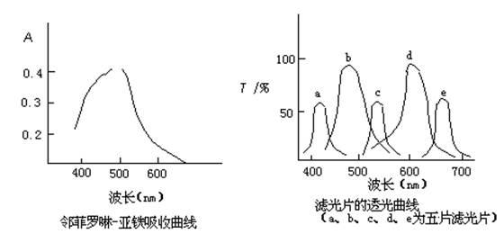
3. 2 分 (1020)
欲测某有色物的吸收光谱，下列方法中可以采用的是 ( )
(1) 比色法 (2) 示差分光光度法
(3) 光度滴定法 (4) 分光光度法
4. 2 分 (1021)
按一般光度法用空白溶液作参比溶液，测得某试液的透射比为 10%，如果更改参
比溶液，用一般分光光度法测得透射比为 20% 的标准溶液作参比溶液，则试液的透
光率应等于 ( )
(1) 8% (2) 40% (3) 50% (4) 80%
5. 1 分 (1027)
邻二氮菲亚铁配合物，其最大吸收为 510 nm，如用光电比色计测定应选用哪一种
滤光片？ ( )
(1) 红色 (2) 黄色 (3) 绿色 (4) 蓝色
6. 2 分 (1074)
下列化合物中，同时有 n→p*，p→p*，s→s*跃迁的化合物是( )
(1) 一氯甲烷 (2) 丙酮 (3) 1,3-丁二烯 (4) 甲醇
7. 2 分 (1081)
双波长分光光度计的输出信号是 ( )
(1) 试样吸收与参比吸收之差 (2) 试样在 l1和 l2处吸收之差
(3) 试样在 l1和 l2处吸收之和 (4) 试样在 l1的吸收与参比在 l2的吸收之差
8. 2 分 (1082)
在吸收光谱曲线中，吸光度的最大值是偶数阶导数光谱曲线的 ( )
(1) 极大值 (2) 极小值 (3) 零 (4) 极大或极小值
9. 2 分 (1101)
双光束分光光度计与单光束分光光度计相比，其突出优点是 ( )
(1) 可以扩大波长的应用范围 (2) 可以采用快速响应的检测系统
(3) 可以抵消吸收池所带来的误差 (4) 可以抵消因光源的变化而产生的误差
10. 2 分 (1105)
在紫外光谱中，lmax 最大的化合物是 ( )
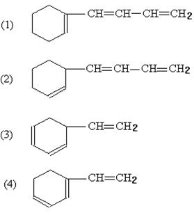
11. 2 分 (1106)
用实验方法测定某金属配合物的摩尔吸收系数e，测定值的大小决定于( )
(1) 配合物的浓度 (2) 配合物的性质
(3) 比色皿的厚度 (4) 入射光强度
12. 2 分 (1173)
下列结构中哪一种能产生分子荧光？ ( )
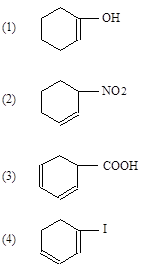
13. 2 分 (1198)
1198
有下列四种化合物已知其结构，其中之一用 UV 光谱测得其lmax 为 302nm，
问应是哪种化合物？ ( )
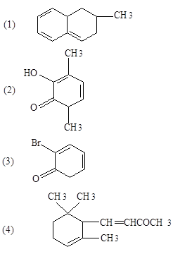
14. 2 分 (1217)
许多化合物的吸收曲线表明，它们的最大吸收常常位于 200─400nm 之间，对这
一光谱区应选用的光源为 ( )
(1) 氘灯或氢灯 (2) 能斯特灯
(3) 钨灯 (4) 空心阴极灯灯
15. 5 分 (1231)
下列四种化合物中,在紫外光区出现两个吸收带者是 ( )
(1)乙烯 (2)1,4-戊二烯
(3)1,3-丁二烯 (4)丙烯醛
16. 2 分 (1232)
助色团对谱带的影响是使谱带 ( )
(1)波长变长 (2)波长变短
(3)波长不变 (4)谱带蓝移
17. 5 分 (1233)
对化合物 CH3COCH=C(CH3)2的n―p*跃迁,当在下列溶剂中测定,谱带波长最短的
是 ( )
(1)环己烷 (2)氯仿
(3)甲醇 (4)水
18. 2 分 (1245)
紫外-可见吸收光谱曲线呈高斯分布的是 ( )
(1)多普勒变宽 (2)自吸现象
(3)分子吸收特征 (4)原子吸收特征
19. 2 分 (1300)
指出下列哪种是紫外-可见分光光度计常用的光源？ ( )
(1) 硅碳棒 (2) 激光器
(3) 空心阴极灯 (4) 卤钨灯
20. 2 分 (1301)
指出下列哪种不是紫外-可见分光光度计使用的检测器？ ( )
(1) 热电偶 (2) 光电倍增管
(3) 光电池 (4) 光电管
21. 2 分 (1302)
指出下列哪种因素对朗伯-比尔定律不产生偏差？ ( )
(1) 溶质的离解作用 (2) 杂散光进入检测器
(3) 溶液的折射指数增加 (4) 改变吸收光程长度
22. 1 分 (1303)
分子荧光过程是 ( )
(1) 光致发光 (2) 能量源激光发光
(3) 化学发光 (4) 电致发光
23. 1 分 (1305)
在分子荧光测量中, 在下列哪一种条件下, 荧光强度与浓度呈正比? ( )
(1) 荧光量子产率较大 (2) 在稀溶液中
(3) 在特定的激发波长下 (4) 用高灵敏度的检测器
24. 1 分 (1306)
下列哪种方法的测量灵敏度高? ( )
(1) 磷光分析法 (2) 荧光分析法
(3) 紫外-可见分光光度法 (4) 目视比色法
25. 2 分 (1307)
已知相对分子质量为320的某化合物在波长350nm处的百分吸收系数(比吸收系数)为
5000, 则该化合物的摩尔吸收系数为 ( )
(1)1.6×104L/(moL・cm) (2)3.2×105 L/(moL・cm)
(3)1.6×106 L/(moL・cm) (4)1.6×105 L/(moL・cm)
26. 2 分 (1308)
在310nm时, 如果溶液的百分透射比是90%,在这一波长时的吸收值是 ( )
(1) 1 (2) 0.1 (3) 0.9 (4) 0.05
27. 1 分 (1309)
荧光分析法和磷光分析法的灵敏度比吸收光度法的灵敏度 ( )
(1) 高 (2) 低 (3) 相当 (4) 不一定谁高谁低
28. 2 分 (1324)
紫外-可见吸收光谱主要决定于 ( )
(1) 分子的振动、转动能级的跃迁 (2) 分子的电子结构
(3) 原子的电子结构 (4) 原子的外层电子能级间跃迁
29. 1 分 (1333)
指出下列说法中哪个有错误? ( )
(1) 荧光和磷光光谱都是发射光谱
(2) 磷光发射发生在三重态
(3) 磷光强度Ip与浓度c 的关系与荧光一致
(4) 磷光光谱与最低激发三重态的吸收带之间存在着镜像关系
30. 2 分 (1334)
指出下列不正确的说法？ ( )
(1) 分子荧光光谱通常是吸收光谱的镜像
(2) 分子荧光光谱与激发波长有关
(3) 分子荧光光谱较激发光谱波长长
(4) 荧光强度与激发光强度呈正比
31. 2 分 (1335)
下列哪一种分子的去激发过程是荧光过程? ( )
(1) 分子从第一激发单重态的最低振动能级返回到基态
(2) 分子从第二激发单重态的某个低振动能级过渡到第一激发单重态
(3) 分子从第一激发单重态非辐射跃迁至三重态
(4) 分子从第一激发三重态的最低振动能级返回到基态
32. 2 分 (1336)
下列哪种说法有错误? ( )
(1) 荧光分子的激发光谱与发射波长无关
(2) 荧光分子的激发光谱的荧光强度是激发波长的函数
(3) 在分子荧光光谱法中吸收与激发光谱常可以互换
(4) 得到荧光分子的激发光谱方法与常规吸收光谱方法是两种基本相同的方法
33. 2 分 (1338)
在荧光光谱中, 测量时, 通常检测系统与入射光的夹角呈 ( )
(1) 180° (2) 120° (3) 90° (4) 45°
34. 2 分 (1339)
某荧光物质的摩尔吸收系数为2.0×105L/(mol×cm),当用激发光强度为50(随机单位)
去激发该荧光物质, 若吸收池为1.0cm, 化合物浓度为5.0 ×10-7mol/L,测得荧光强度
为2.3(随机单位), 则该化合物的荧光量子效率约为 ( )
(1) 0.2 (2) 0.46 (3) 23 (4) 2.3
35. 2 分 (1340)
某化合物在lmax=356nm处, 在乙烷中的摩尔吸收系数emax=87 L/(mol×cm), 如果用1.0cm吸收池,该化合物在已烷中浓度为1.0 ×10-4mol/L,则在该波长处, 它的百分透射比约为 ( )
(1) 87% (2) 2% (3) 49% (4) 98%
36. 2 分 (1341)
某化合物的浓度为1.0 ×10-5mol/L,在lmax=380nm时, 有透射比为50%, 用1.0cm吸收池, 则在该波长处的摩尔吸收系数emax /[L/(mol×cm)]为 ( )
(1) 5.0 ×104 (2) 2.5 ×104 (3) 1.5 ×104 (4) 3.0 ×104
37. 2 分 (1342)
在分光光度计的检测系统中, 以光电管代替硒光电池, 可以提高测量的( )
(1) 灵敏度 (2) 准确度 (3) 精确度 (4) 重现性
38. 2 分 (1343)
基于发射原理的分析方法是 ( )
(1) 光电比色法 (2) 荧光光度法
(3) 紫外及可见分光光度法 (4) 红外光谱法
39. 2 分 (1344)
基于吸收原理的分析方法是 ( )
(1) 原子荧光光谱法 (2) 分子荧光光度法
(3) 光电直读光谱法 (4) 紫外及可见分光光度法
40. 2 分 (1346)
在紫外-可见分光光度计中, 强度大且光谱区域广的光源是 ( )
(1) 钨灯 (2) 氢灯 (3) 氙灯 (4) 汞灯
41. 1 分 (1355)
硒光电池主要用于检测 ( )
(1) X射线 (2) 紫外光 (3) 可见光 (4) 红外光
42. 2 分 (1357)
荧光分光光度计与紫外-可见分光光度计的主要区别在于 ( )
(1) 光路 (2) 光源 (3) 单色器 (4) 光电倍增管
43. 2 分 (1367)
物质的紫外-可见吸收光谱的产生是由于 ( )
(1) 分子的振动 (2) 分子的转动
(3) 原子核外层电子的跃迁 (4) 原子核内层电子的跃迁
44. 1 分 (1371)
工作波长范围较宽的光度计为 ( )
(1) 581-G型滤光光度计 (2) 72型分光光度计
(3) 721 型分光光度计 (4) 751 型分光光度计
45. 2 分 (1372)
在一定波长处, 用2.0 cm比色皿测得某试液的透光度为60%, 若改用3.0 cm比色皿时,
该试液的吸光度为 ( )
(1) 0.11 (2) 0.22 (3) 0.33 (4) 0.44
46. 1 分 (1374)
阶跃线荧光的波长 ( )
(1)大于所吸收的辐射的波长 (2)小于所吸收的辐射的波长
(3)等于所吸收的辐射的波长 (4)正比于所吸收的辐射的波长
47. 2 分 (1381)
双波长分光光度计的输出信号是 ( )
(1) 试样与参比吸收之差 (2) 试样与参比吸收之和
(3) 试样在l1和l2处吸收之差 (4) 试样在l1和l2处吸收之和
48. 1 分 (1752)
下面哪一种电子能级跃迁需要的能量最高? ( )
(1) s→s * (2) n→s *
(3) p→p * (4) p→s *
49. 2 分 (1753)
化合物中CH3--Cl在172nm有吸收带,而CH3--I的吸收带在258nm处,CH3--Br 的吸收
带在204nm ,三种化合物的吸收带对应的跃迁类型是( )
(1) s→s * (2) n→p *
(3) n→s * (4)各不相同
50. 2 分 (1754)
某化合物在乙醇中 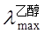 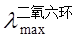
迁类型是（ ）
(1) s →s * (2) p→p *
(3) p→s * (4) p→p *
51. 2 分 (1755)
一化合物溶解在己烷中,其=305
nm，而在乙醇中时， 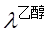
(1) s→s * (2)n→p *
(3) p→p * (4) n→s *
52. 2 分 (1756)
在分子 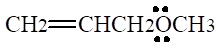
(1) s →p * (2) p→s *
(3) n→s * (4) n→p *
53. 2 分 (1757)
一化合物在235nm处有最大吸收值,用1.0 cm的吸收池,化合物的浓度为2.0×10-4 mol/L,透射比为20%, 则在该波长处的摩尔吸收系数 emax /[L/(moL・cm)]为 ( )
(1) 5.0×103 (2) 3.5×103 (3) 2.5×103 (4) 1.0×103
54. 1 分 (1758)
在254nm时，如果溶液的百分透射比是10％，其吸光度值为 （ ）
(1) 1 (2) 0.9 (3) 0.1 (4) 0.05
55. 2 分 (1759)
某化合物在己烷中（lmax＝220nm）的摩尔吸收系数emax＝14500L/(moL・cm)，若用1.0cm吸收池，1.0×10－4mol/L的该化合物在该波长处的百分透射比为 （ ）
(1) 5% (2) 3.5% (3)10% (4)50%
56. 2 分 (1760)
对某特定的仪器，其透射比的标准偏差为0.006，对某溶液测得的透射比T＝0.015 时 那么浓度的相对标准偏差是 （ ）
(1) +2.5% (2) +5.0% (3) +9.5% (4) +12.5%
57. 2 分 (1761)
对某特定的仪器，其透射比的标准偏差为0.006，当测得溶液的百分透射比T＝64.8％ 时，则浓度的相对标准偏差是 （ ）
(1) +6.6% (2) +4.2% (3) +3.4% (4) +2.1%
58. 2 分 (1762)
对某特定的仪器，其透射比的标准偏差为0.006，当测得溶液的吸光度A＝0.334时， 则浓度的相对标准偏差是 （ ）
(1) +0.6% (2) +1.7% (3) +3.5% (4) +7.6%
59. 2 分 (1763)
比较下列化合物的UV－VIS光谱λmax 大小 （ ）
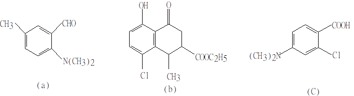
(1)a>b>c (2)c>a>b (3)b>c>a (4)c>b>a
60. 2 分 (1764)
比较下列化合物的UV－VIS吸收波长的位置（λmax ） ( )
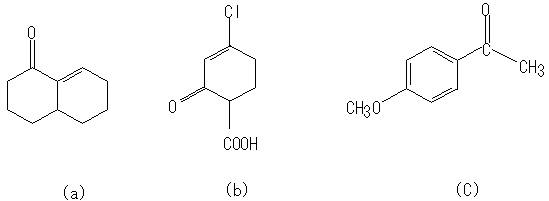
(1) a>b>c (2) c>b>a (3)b>a>c (4)c>a>b
61. 2 分 (1765)
在紫外－可见吸收光谱中，下列具有最大吸收波长的物质是 （ ）
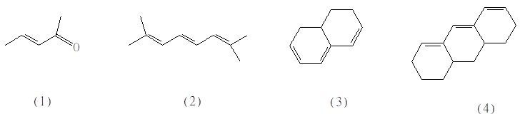
62. 2 分 (1766)
在紫外－可见光谱区有吸收的化合物是 （ ）
(1) CH3-CH=CH-CH3 (2) CH3-CH2OH
(3) CH2=CH-CH2-CH=CH2 (4) CH2=CH-CH=CH-CH3
63. 2 分 (1767)
Fe和Cd 的摩尔质量分别为55.85g/mol和112.4g/mol，各用一种显色反应用分光光 度法测定，同样质量的两元素分别被显色成容积相同的溶液，前者用2cm吸收池，后者用1cm吸收池，所得吸光度相等，此两种显色反应产物的摩尔吸收系数为（ ）
(1) e Fe≈2e Cd (2) e Cd ≈2e Fe
(3) e Cd≈4e Fe (4) e Fe≈4e Cd
64. 2 分 (1768)
双波长分光光度计和单波长分光光度计的主要区别是 （ ）
(1)光源的个数 (2)单色器的个数
(3)吸收池的个数 (4)单色器和吸收池的个数
65. 1 分 (1769)
物质的颜色是由于选择性地吸收了白光中的某些波长所致，CuSO4 溶液呈蓝色是
由于它吸收了白光中的 （ ）
(1) 蓝色光 (2) 绿色光 (3) 黄色光 (4) 红色光
66. 2 分 (1770)
符合朗伯－比尔定律的有色溶液稀释时，其最大吸收峰的波长位置 （ ）
(1) 向长波方向移动
(2) 向短波方向移动
(3) 不移动，但最大吸收峰强度降低
(4) 不移动，但最大吸收峰强度增大
67. 2 分 (1771)
某金属离子X和R试剂形成一有色配合物，若溶液中X的浓度为1.0×10－4mol/L，
用1cm吸收池在525nm处测得吸光度为0.400，则此配合物在525nm处的摩尔吸收系数
为 ( ）
(1) 4.0×10-3 (2) 4.0×103 (3) 4.0×10-4 (4) 4.0×104
68. 2 分 (1772)
以下三种分析方法：分光光度法（S）、磷光法（P）和荧光法（F），具有各不相同的灵敏度，按次序排列为 ( )
(1) P<F<S (2) S=F<P (3) P<S<F (4) F>P>S
69. 2 分 (1773)
A和B二物质紫外－可见吸收光谱参数如下：
物质 l1时的摩尔吸收系数 l2时的摩尔吸收系数/[L/(moL・cm)]
A 4,120 0.00
B 3,610 300
若此二种物质的某溶液在l1时在1.00cm 吸收池中测得A＝0.754，在l2时于 10.0cm 吸收池中测得A＝0.240，问B的浓度是多少？（ ）
(1) 0.64×10-5mol/L (2) 0.80×10-5 mol/L
(3) 0.64×10-4mol/L (4) 0.80×10-4mol/L
70. 1 分 (1774)
分光光度法中，为了减小浓度测量的相对误差，配制的试样溶液的透射比应控制在什么 范围？ （ ）
(1) 小于1% (2) 1%-10%
(3) 30%-50% (4) 90%-99%
71. 2 分 (1775)
下列哪种方法可用于测定合金中皮克数量级（10－12）的铋？ （ ）
（1）分光光度法 （2）中子活化
（3）极谱法 （4）电位滴定法
72. 2 分 (1776)
KIO4法氧化Mn2+到MnO4－，然后用分光光度法测定，选择合适的空白为 （ ）
(1) 蒸馏水 (2) 试剂空白
(3) 除KI 外的试剂空白 (4) 不含KIO4的溶液空白
73. 1 分 (1777)
在分光光度法中，运用朗伯－比尔定律进行定量分析采用的入射光为（ ）
（1）白光 （2）单色光 （3）可见光 （4）紫外光
74. 2 分 (1778)
在分光光度法中，运用朗伯－比尔定律进行定量分析采用的入射光为（ ）
（1）白光 （2）单色光 （3）可见光 （4）紫外光
75. 2 分 (1779)
邻二氮菲亚铁配合物的最大吸收波长为510nm，如用光电比色计测定时应选哪种
滤光片？ （ ）
（1）红色 （2）黄色 （3）绿色 （4）蓝色
76. 2 分 (1780)
分子运动包括有电子相对原子核的运动（E电子）、核间相对位移的振动（E振动）和转动（E转动）这三种运动的能量大小顺序为 （ ）
(1) E振动>E转动>E电子 (2) E转动>E电子>E振动
(3) E电子>E振动>E转动 (4) E电子>E转动>E振动
77. 2 分 (1781)
现有紫外－可见吸收光谱相互干扰的A和B两组分，它们的最大波长分别为lA和lB，若用双波长测定A组分的含量，则下面哪一种选择l1和l2的方法是正确的？ （ ）
（1）使l1和l2分别等于lA和lB
（2）选l1等于lA，选l2使B组分在l2的吸光度和它在l1处的吸光度相等
（3）选l1等于lA，选l2为A，B两组分吸收峰相交处的波长
（4）选l1等于lB，选l2使A组分在l2的吸光度和它在l1处的吸光度相等
78. 1 分 (1782)
某化合物在乙醇中的lmax＝240nm，emax＝13000L/(moL・cm)，则该UV－VIS吸收谱带的跃迁类型是（ ）
(1) n→s * (2) n→p * (3) p →p * (4) s →s *
79. 2 分 (1783)
在分子荧光法中，以下说法中正确的是 （ ）
（1）激发过程中的电子自旋虽不变，但激发态已不是单重态
（2）激发态电子的自旋不成对，此状态称为单重态
（3）激发三重态能级比相应激发单重态能级要低一些
（4）单重态到三重态的激发概率高于单重态到单重态
80. 2 分 (1784)
在分子荧光分析法中，以下说法正确的是 （ ）
（1）分子中p电子共轭程度越大，荧光越易发生，且向短波方向移动
（2）只要物质具有与激发光相同的频率的吸收结构，就会产生荧光
（3）分子中p电子共轭程度越大，荧光越易发生，且向长波方向移动
（4）非刚性分子的荧光强于刚性分子
81. 2 分 (1785)
在分子荧光分析法中，下面说法正确的是 （ ）
（1）荧光发射光谱不随激发波长的变化而改变
（2）荧光发射光谱要随激发波长的变化而改变
（3）荧光激发光谱与它的紫外－可见吸收光谱互为镜像对称关系
（4）荧光发射光谱与它的紫外－可见吸收光谱形状相似且波长位置也一样
82. 2 分 (1786)
在分子荧光分析法中，下面说法不正确的是 （ ）
（1）吸电子基团常使荧光增强
（2）将一个高原子序数的原子引入到p体系中，使荧光减弱
（3）与p电子体系作用小的取代基引入，对荧光影响不明显
（4）给电子基团常使荧光增强
83. 5 分 (1787)
化合物（1）的烯醇式乙酰化产物可能是（2）和（3），它的紫外吸收lmax 为238nm(lge max=4.2)。指出这个乙酰化产物是属于哪一种结构？( 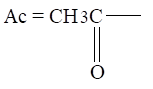
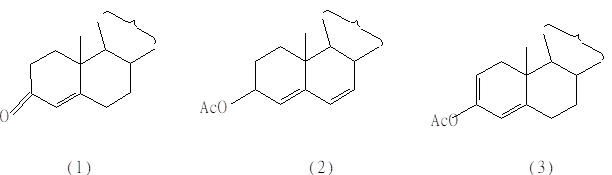
84. 5 分 (1788)
在下列五个化合物的UV－VIS吸收光谱中，lmax 计算值为324nm的是什么化合物？
( )
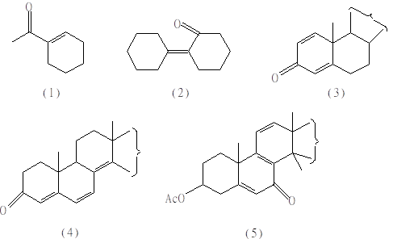
85. 5 分 (1789)
在下列五个三烯的异构体中，请问UV－VIS吸收光谱中lmax＝323nm的化合物是( )
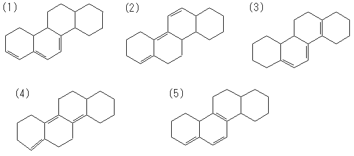
二、填空题 ( 共87题 )
1. 2 分 (2013)
在分光光度计中，常因波长范围不同而选用不同的检测器，下面两种检测器，各适用的光区为：
(1) 光电倍增管用于 _____________________
(2) 热电偶用于 ______________
2. 2 分 (2015)
在分光光度计中，常因波长范围不同而选用不同材料的容器,现有下面三种材料的容器，各适用的光区为：
(1) 石英比色皿用于 ___________
(2) 玻璃比色皿用于 ___________
(3) 氯化钠窗片吸收池用于 ___________
3. 2 分 (2016)
在分光光度计中，常因波长范围不同而选用不同的光源，下面三种光源，各适用的光区为：
(1) 钨灯用于 ___________
(2) 氢灯用于 ___________
(3) 能斯特灯用于 ___________
4. 5 分 (2024)
可见-紫外、原子吸收、红外的定量分析吸收光谱法都可应用一个相同的
_____________________定律, 亦称为 ___________ 。其数学表达式为 ____________ 。
5. 5 分 (2028)
朗伯－比尔定律成立的主要前提条件是采用______________ 。当入射辐射不符合条件时，可引起对比尔定律的________ 偏离，此时工作曲线向 _____ 轴弯曲 。
6. 2 分 (2054)
紫外-可见分光光度测定的合理吸光范围应为 _______________ 。这是因为在该区间 _______ 。
7. 2 分 (2067)
如图设 a、b 的浓度分别为 ca和 cb，在入射光波长为l2时的摩尔吸收系数分别为e2(a)和e2(b)，则在使用 2.0 cm 的比色皿时，在l2 测得的总吸光度为 ___________ 。
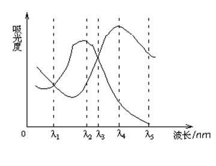
8. 2 分 (2076)
紫外-可见光分光光度计所用的光源是 __________ 和 ___________ 两种.
9. 5 分 (2310)
紫外-可见光谱法主要应用有:
(1) ______________________________________
(2)_______________________________________
(3)_______________________________________
(4)_______________________________________
(5)_______________________________________
10. 5 分 (2311)
双波长分光光度法的主要优点是:
(1)__________________________
(2)__________________________
(3)__________________________
(4)__________________________
11. 5 分 (2312)
双光束分光光度计是将光源发出的光束分成__________________, 分别进入____
__________________________和___________________________.
它比单光束分光光度计的主要优点是_______________________________
12. 5 分 (2313)
形成l1和l2两个单色光. 双波长方法的分析原理是基于
__________________________
13. 5 分 (2314)
紫外-可见光分光度法可用于混合物的分析, 其定量依据是
__________________________
如果混合物中的物质间存在相互作用, 则混合物的吸光度与浓度的关系将不遵从
_______________________________________________。
14. 5 分 (2315)
物质的紫外-可见光谱又称_________________________光谱分子的荧光激发光谱是分子在__________________________处的荧光光谱。分子的荧光光谱是分子在__________________________处的发射光谱。
15. 5 分 (2316)
在紫外-可见分光光度法中, 吸光度与吸光溶液的浓度遵从的关系式为
_________________________而在分子荧光光谱法中, 荧光强度与浓度遵从的关系式为________________________
16. 5 分 (2317)
在分子荧光光谱法中, 增加入射光的强度, 测量灵敏度______________________
原因是 __________________________
17. 5 分 (2318)
紫外-可见分光光度计的单色器在吸收池_____，原子吸收分光光度计的单色器在吸
收池_____，在一般分子荧光光谱仪中, 单色器分别在吸收池_____和______.
18. 5 分 (2319)
在紫外-可见吸收光谱中, 一般电子能级跃迁类型为:
(1)______________跃迁, 对应________________光谱区
(2)______________跃迁, 对应________________光谱区
(3)______________跃迁, 对应________________光谱区
(4)______________跃迁, 对应________________光谱区
19. 2 分 (2322)
分光光度法与比色法相比, 其测量范围不再局限于可见光区, 而是扩展到_____及______光区. 且利用吸光度的________性质, 可同时测定溶液中两种以上的组分.
20. 2 分 (2324)
分光光度计与光电比色计均是测量吸光度. 主要不同处在于获得_______的方法不同. 前者采用_______或_______等分光器, 后者则是采用________分光器.
21. 2 分 (2325)
双波长分光光度计较之于单波长分光光度计的突出特点是抵消了________和_______所造成的误差.
22. 5 分 (2326)
在分光光度法中, 以________为纵坐标, 以_______为横坐标作图, 可得光吸收曲线. 浓度不同的同种溶液, 在该种曲线中其最大吸收波长_______，相应的吸光度大小则_______.
23. 2 分 (2327)
高浓度示差分光光度法的测量原理是基于_____________________________与__________________________呈正比. 该法与普通分光光度法的主要不同之处在于采用_________________________作参比进行测量.
24. 2 分 (2328)
光电比色法与目视比色法在测量原理上有差别, 前者是比较_____________,后者是比较__________________________。
25. 2 分 (2340)
朗伯定律的微分表示式为___________________________
设想将一均匀吸光溶液分作厚度相等的薄层, 当一强度为I 的平行单色光通过此溶液时, 若通过第一薄层光的强度为I/2,则通过第二薄层和第三薄层的光的强度分别为
___________________________ 和 ___________________________.
26. 2 分 (2341)
测定一系列弱酸HB的溶液时, 在所测波长处HB及B-两种形式的摩尔吸收系数e 值如不同,将产生对比尔定律的偏差.当HB的分析浓度增大时,若e(B-)>e(HB)，将发生_________偏差, 若e(B-)<e(HB) 则发生________偏差. 在一定波长处, 若___________则不发生偏差.
27. 5 分 (2342)
朗伯-比尔定律表示为lg(I0/I)=ebc, 式中, e称为_____________________,其单位为__________________, 它与_______________, _____________________和___________________________等因素有关。
28. 2 分 (2343)
吸光光度法采用复合光进行测定时, 实测吸光度值A1比平均吸光度值A2要_______________, 且吸光物质的浓度越大, A1与 A2之间的差别将越___________, 这将使标准曲线在浓度增大时向_________________________轴方向弯曲。
29. 2 分 (2346)
示差分光光度法与普通分光光度法相比, 提高了方法的______________________,
其主要原因是充分利用了仪器的_____________________________。
30. 2 分 (2348)
若化学平衡的两种物质对光都有吸收, 且它们的吸收曲线在某处相交, 则出现交点的波长称为________________________, 在此波长处, 两物质的___________________相等。
31. 2 分 (2349)
当浓度很低时, 物质的荧光强度与其浓度________________________, 在较高浓度时,荧光强度将随浓度的增高而________________________。
32. 5 分 (2352)
在分子荧光光谱法中, 通常在与入射光呈__________的方向进行测量, 而在拉曼光谱法中, 测量的方向与_________________________相同, 而光谱性质属____________.
33. 2 分 (2353)
在紫外-可见分光光度法中, 吸光度A的定义式为__________;摩尔吸收系数的定义式为______________________; 透射比T的定义式为_____________.
34. 2 分 (2354)
在分子（ＣH3）2ＮＣＨ＝ＣH2中, 它的发色团是_____________________________, 在分子中预计发生的跃迁类型为_________________________________________。
35. 2 分 (2355)
乙醛（ＣH3ＣＨＯ）分子在160nm处有吸收峰, 该峰相对应的电子跃迁类型为________,它在180nm处的吸收峰, 相应的跃迁类型为______, 它在290nm处的吸收峰, 相应的跃迁类型为______。
36. 2 分 (2621)
用紫外-可见分光光度计测定时,用试剂空白作参比溶液测得某试液的透射比为10%, 如果更改参比溶液,用一般分光光度法测得透射比为20%的标准溶液作参比溶液, 则该试液的透射比应等于_______。
37. 2 分 (2623)
用紫外-可见分光光度计测定时,用试剂空白作参比溶液测得某试液的透射比为10%, 如果更改参比溶液,用一般分光光度法测得透射比为20%的标准溶液作参比溶液, 则该试液的透射比应等于_______。
38. 2 分 (2624)
分光光度法的灵敏度是由物质在________________________________________表示, 其数学表达式是______________________________________。
39. 2 分 (2625)
在CH3CHO分子中,其发色团是________, 在该分子中主要发生的电子跃迁类型有
_________________________________________。
40. 2 分 (2626)
共轭二烯烃在己烷溶剂中 =219nm,改用乙醇作溶剂时λmax 比219nm______, 原因是该吸收是由_________跃迁引起,在乙醇中,该跃迁类型的激发态比基态的稳定性_______。
41. 2 分 (2627)
一化合物溶解在己烷中,其=305nm,溶解在乙醇中时, 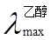
42. 2 分 (2628)
化合物CH3-Cl在172nm的吸收谱带归属于__________跃迁;CH3-I在258nm的吸收带是由于_________跃迁;CH3-Br在204nm的吸收带是_________跃迁引起。
43. 2 分 (2629)
丙酮分子中的发色团是_________.丙酮在280nm的紫外吸收是_________跃迁引起; 而它在187nm和154nm的紫外吸收分别是由_________跃迁和__________跃迁引起。
44. 2 分 (2630)
丙酮分子中的发色团是_________.丙酮在280nm的紫外吸收是_________跃迁引起; 而它在187nm和154nm的紫外吸收分别是由_________跃迁和__________跃迁引起。
45. 2 分 (2631)
在环戊一烯中(C5H8), 能量最低的能级跃迁是_________跃迁, 该跃迁是由________ 发色团引起的。
46. 5 分 (2632)
朗伯-比尔定律是分光光度法分析的基础,该定律的数学表达式为_____________。 该定律成立的前提是:(1)____________________________________________;
(2) __________________________________;(3)___________________________ 。
47. 2 分 (2633)
分光光度法用于多组分体系测定的前提是_________________________________, 此时, 体系的总吸光度是___________, 其数学表达式是 _____________________。
48. 2 分 (2634)
在紫外-可见吸收光谱中, 溶剂的极性不同, 对吸收带影响不同. 通常, 极性大的溶剂使p→p *跃迁的吸收带_________; 而对n→p *跃迁的吸收带, 则__________。
49. 2 分 (2635)
分光光度法的灵敏度表示式是__________________,它与Sandell提出的灵敏度指数 S间的关系是___________________________。
50. 2 分 (2636)
在分光光度法中,偏离朗伯-比尔定律的仪器因素,除光源的稳定性, 检测系统的非线性 影响等因素外,主要是指下列仪器因素:1._____________________________2._______ _________________________。
51. 2 分 (2637)
在分光光度法中,偏离朗伯-比尔定律的化学因素主要是指溶液中吸光物质发生了 ___________、____________、_____________和_____________等。
52. 2 分 (2638)
在常规紫外-可见分光光度法测定时,应控制被测物质的浓度或吸收池厚度,以便使 吸光度值在__________范围内,或者透射比在_______________范围. 原因是在这样的范围内_____________________________________________。
53. 2 分 (2639)
丙酮分子中呈现三种吸收带，其电子跃迁类型有____________、___________ 和
__________等三种。
54. 2 分 (2640)
已知某化合物分子内有四个碳原子、一个溴原子和一个双键,在210nm波长以上无特征紫外光谱数据,则此化合物的结构可能是____________________。
55. 2 分 (2643)
在特种钢工业生产中,铬基合金钢中微量镁的测定常用铬黑T(EBT)显色的方法,EBT本身为蓝色,与Mg2+配合后化合物显红色,在制作工作曲线测定微量Mg时,应选用的参比溶液 是_________________________。
56. 2 分 (2644)
用紫外-可见分光光度计测量有色配合物浓度,相对偏差最小时的吸光度为_______， 透射比为_________。
57. 5 分 (2645)
紫外-可见分光光度法定量分析中,实验条件的选择包括________________________ ______________________________等方面。
58. 2 分 (2646)
区别分子中n→p *和 p→p *电子跃迁类型可以采用吸收峰的_____________和___________ ____两种方法。
59. 2 分 (2647)
分子荧光是_________________________________________发出的光. 发光时间较短; 而磷光是_________________________________________发出的光,发光时间较长。
60. 2 分 (2648)
在双波长分光光度法测定双组分混合物时,用作图法选择l1 和l2的原则:(1)____________________________________________________________ (2)______________________________________________________。
61. 2 分 (2649)
用萘氏试剂光度法测定NH4+含量时,测得其c mol/L浓度的透射比为T,当NH4+浓度 增加3倍时,在同样测量条件下,其透射比为_________________。
62. 2 分 (2650)
双硫腙-CCl4萃取剂吸收580～620nm波长的光, 因此该萃取剂呈现______颜色。
63. 2 分 (2651)
已知Nb相对原子质量为92.91,在100mL含Nb100ug时, 用氯代磺酚S显色后,形成1:1 配合物, 用1.00cm吸收池在650nm波长下测得透射比为44%,则求得Nb一氯代磺酚S 配合物摩尔吸收系数为___________。
64. 2 分 (2652)
某溶液用2cm吸收池测量时T=60%,则A=_______,若改用1cm和3cm吸收池则A分别 为_________和_________。
65. 2 分 (2653)
某化合物在乙醇中=240nm , emax=1300L/(moL・cm), 则该谱带的跃迁类型是__________。
66. 2 分 (2654)
分子中各种电子能级高低顺序为______________________________,在大多数有机化 合物分子中,价电子是处在_________的各个轨道中的,一般紫外-可见吸收光谱分析中最有用的二种电子 能级的跃迁是__________、___________跃迁。
67. 2 分 (2655)
通常有机化合物异构体中,反式异构体的紫外-可见最大吸收波长比顺式的________， 摩尔吸收系数________。
68. 2 分 (2656)
双波长分光光度计输出的信号是_______________________________________。
69. 2 分 (2657)
斯托克斯荧光指___________________________________,
反斯托克斯荧光指_______________________________________。
70. 2 分 (2658)
分子磷光的发光速率___________,磷光的平均寿命比荧光_______, 在光照停止后 ____________________。
71. 2 分 (2659)
分子的最低激发三重态与基态之间的能量差要比最低激发单重态和基态之间的能量差 ________,从而使两者之间的_________概率增大。
72. 2 分 (2660)
分子荧光的发射过程是分子中的价电子吸收辐射能之后,跃迁到高电子激发态的任一振 动能级,然后通过_____________, 降落到激发态的___________________,最后发射出一个光子而回到基态。
73. 2 分 (2661)
分子荧光与磷光均属光致发光,当激发光辐射停止后, 前者将___________________, 而后者将___________________________________________。
74. 2 分 (2662)
紫外-可见分光光度计与荧光分光光度计结构上的两个最主要差别是 ____________________________和____________________________________。
75. 2 分 (2663)
当激发态分子由第一电子激发态的___________,以光辐射形式释放能量降落到基态的各个振动和转动能级时,基态振动和转动能级越_______,所发射荧光的波长越_______。
76. 2 分 (2664)
8-羟基喹啉与8-羟基喹啉镁的螯合物相比,后者的荧光比前者________,这是由于后者 ____________的缘故。
77. 2 分 (2665)
化合物 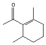
78. 5 分 (2666)
化合物 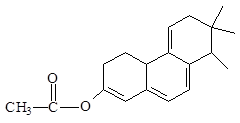
79. 5 分 (2667)
化合物 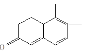
80. 2 分 (2668)
化合物 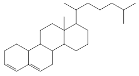
_______nm。
81. 2 分 (2669)
化合物 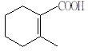
82. 2 分 (2670)
化合物 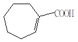
83. 2 分 (2671)
化合物 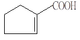
84. 2 分 (2672)
化合物 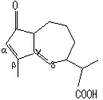
85. 2 分 (2959)
受激气态原子直接跃回高于基态的亚稳态时发射的荧光称_________________, 受激气态原子以非辐射形式失去部分能量回到较低激发态,然后跃回基态时产生的荧光称 ________________ 。
86. 2 分 (4534)
正确拿取吸收池的方法是____________________________________________.
87. 2 分 (4535)
从本质上阐述红外吸收光谱法比紫外吸收光谱法更有利于有机化合物的定性分析的原因.
三、计算题 ( 共66题 )
1. 10 分 (3065)
浓度为 5.00×10-4 mol/L的某酸HA溶液于 440nm、1.0cm 比色皿中测量得到的吸光度数据: pH = 1 时为 0.401；pH = 13 时为 0.067。问当 pH = 7 时该溶液的吸光度是多大？ 该酸 HA 的解离常数为 5.00×10-7 。
2. 10 分 (3066)
某钢样含镍 0.08%，用丁二酮肟比色法 (e=1.3×104L/(cm×mol)) 进行测定。若试样溶解、显色后转入 100mL 容量瓶中加水稀释至刻度，在波长 470nm 处用1.0cm 比色皿测量。问下列三种情况下哪种得到的结果精密度最好？（Ar(Ni)= 58.70）
(1) 称取试样 100mg
(2) 称取试样 250mg
(3) 称取试样 500mg
3. 10 分 (3067)
用分光光度法研究某一弱酸 HA，为此配制了一系列弱酸总浓度相同而 pH 不同的溶液。用 pH 计测定其 pH，用1.0cm 比色皿在波长为 530nm 处测量吸光度，得如下数据：
pH 2.50 3.00 4.00 4.60 5.00 5.40 6.00 7.00 7.50
A 2.00 2.00 1.78 1.40 0.92 0.50 0.16 0.00 0.00
求此弱酸的解离常数 Ka。
4. 10 分 (3068)
配合物 MR2的吸收峰在 480nm 处。当配合剂有五倍以上过量时，吸光度只与金属离子的总浓度有关且遵循比尔定律。金属离子和配合剂在 480nm 处都无吸收。今有一含 M2+ 0.000230 mol/L，含 R-0.00860 mol/L 的溶液，在 480nm 用1.0cm 比色皿测得它的吸光度为 0.690。另有一含 M2+ 0.000230 mol/L，含 R-0.000500 mol/L 的溶液，在同样条件下测得吸光度为 0.540。试计算该配合物的稳定常数。
5. 10 分 (3069)
无色物质 A 和 B 反应时生成有色配合物 AB，其 e450= 100L/(moL・cm)。该配合物的解离常数为 0.0006。今将浓度均为 0.0200 mol/L 的 A、B 溶液等体积混匀，得到溶液C，将 C 注入1.0cm 比色皿，在 450nm 处测量吸光度。问读数为多少？若将此溶液 C稀释一倍并改用2.0cm 比色皿测量吸光度，问读数是多少？
6. 10 分 (3070)
由钠灯发出的辐射通过一玻璃液槽，其中放有折射指数为 1.34 的溶液，假设液槽的两壁与光束相互垂直，玻璃的折射指数为 1.71，空气的折射指数为 1.00。计算总的反射损失百分数。已知当光束垂直投射到界面上时，光反射率可用下式表示：
P= [(n2- n1)/ (n2+ n1)]2
7. 10 分 (3071)
对某激发态分子来说，各种去活化过程的速率常数如下：
kf（荧光） = 2.00×108s-1
kC（内部转换，S1→S0）= 8.00×107 s-1
kx（体系间跨越，S1→T1）= 2.00×109 s-1
kp（磷光） = 0.70 s-1
kc’（体系间跨越，T1→S0）= 0.2 s-1
试求该分子的荧光和磷光量子效率各为多少？（ S0 基态；S1第一激发单重态；T1三重态）
8. 10 分 (3073)
指示剂 HIn 在室温下的解离常数为 5.20×10-6。用1.0cm 比色皿测量浓度为
7.50×10-5 mol/L 的指示剂溶液的吸光度，得到如下数据：
───────────── ──┬─────────────────`
吸 光 度 │ 吸 光 度
───┬──────┬──── ┼─ ──┬──────┬──────
l/nm │ pH = 1.00 │pH = 13.00│ l/nm │ pH = 1.00 │ pH = 13.00
───┼ ───── ┼──── ┼── ─┼──────┼──────
420 │ 0.535 │ 0.050 │ 550 │ 0.119 │ 0.324
445 │ 0.657 │ 0.068 │ 570 │ 0.068 │ 0.352
450 │ 0.658 │ 0.076 │ 585 │ 0.044 │ 0.360
455 │ 0.656 │ 0.085 │ 595 │ 0.032 │ 0.361
470 │ 0.614 │ 0.116 │ 610 │ 0.019 │ 0.355
510 │ 0.353 │ 0.223 │ 650 │ 0.014 │ 0.284
───┴─ ────┴──── ┴───┴── ───┴──────
试问： (1) 在何种波长时指示剂的吸光度与 pH 无关？
(2) pH = 5.22 时，在 450nm 处用1.0cm 比色皿测量该指示剂溶液的吸光度,
所得数值为多少？
9. 10 分 (3074)
某指示剂 HIn 的三种水溶液，其组成和吸光度如下：
溶液组成 吸光度
1.00×10-5 mol/L HIn + 0.1 mol/L NaOH + 0.1 mol/L NaClO4 0.302
2.00×10-5 mol/L HIn + 0.1 mol/L NaOH + 0.1 mol/L NaClO4 0.604
1.00×10-5 mol/L HIn + 0.2 mol/L NaClO4 pH = 7 0.165
测量吸光度所选之波长处只有指示剂阴离子 In-有吸收，计算指示剂在离子强度为I= 0.2 时的解离常数。
10. 10 分 (3075)
在常规分光光度测量中，化合物Ｘ的标准溶液浓度为0.00100 mol/L，其吸光度读数为 0.699, 一种Ｘ的未知溶液，它的吸光度读数A为 1.000。如改用标准溶液作参比，
(1) 此时，未知溶液的吸光度是多少？
(2) 设测量时DT 均为±0.5%，问用常规法及示差法测量未知溶液吸光度时，
结果的相对误差各为多少？
11. 10 分 (3076)
0.00122 mol/L 甲基红的 0.1 mol/L HCl 溶液, 在 528nm 和 400nm 处的吸光度依次为 1.738 和 0.077。0.00109 mol/L 甲基红的 0.1mol/L NaHCO3溶液在这两种波长处的吸光度值分别为 0.000 和 0.753。今将少量的甲基红溶于 0.1mol/L NaAc - HAc缓冲溶液中 (pH=4.31)，它在 528nm 和 400nm 处的吸光度分别为 1.401 和 0.166。在所有的测量中，仪器等条件相同，问甲基红在离子强度为 0.1 时的酸式解离常数是多少？设吸收池长为1.0cm。
12. 10 分 (3077)
金属离子 M2+与配合剂 X-形成配合物 MX3-��, 其它种类配合物的形成可以忽略。在 350nm 处 MX3-强烈吸收，溶液中其它物质的吸收可忽略不计。包含 0.0005 mol/L M2+和 0.200 mol/L X-的溶液，在 350nm 和1.0cm 比色皿中测得吸光度为 0.800；另一溶液由 0.000500mol/L M2+和 0.0250mol/L X-组成，在同样条件下测得吸光度为 0.640。设前一种溶液中所有 M2+均转化为配合物，而在第二种溶液中并不如此，试计算 MX3-的稳定常数。
13. 5 分 (3082)
在 100mL 含金为 200mg 的标准溶液中，分取 20.0mL 用结晶紫萃取光度法测定金。以 5.0mL 的苯萃取（萃取率≈100%）后，萃取液用 1cm 比色皿在波长 600nm 下测得 T ＝ 50％。求吸收系数和摩尔吸收系数各为多少？ Ar(Au) = 197.0
14. 10 分 (3089)
有一酸碱指示剂 In, 本身为一弱碱，将它配成 8.00×10-5 mol/L 的溶液后，分三次移取各 25.00 mL 到 3 个 50mL 容量瓶中。第一瓶加 10mL 1mol/L 的 NaOH，第二瓶加 10mL 1mol/L 的 HCl；第三瓶加 20mL pH = 8.00 的缓冲溶液。然后各稀释到刻度后，用 1cm 比色皿得如下数据：
溶液 A(420nm) A(550nm)
强酸性 0.773 0.363
强碱性 0.064 0.363
pH=8.00 的缓冲液 0.314 0.363
现有一含相同指示剂，但 pH 未知的溶液。在同样条件下测得：
A420= 0.322，A550= 0.420，
求该未知溶液的 pH。
15. 5 分 (3095)
浓度 0.0750mol/L Co(NO3)2 溶液在 550nm 处的吸光度为 0.380。在同一比色皿，相同波长下测得另一 Co(NO3)2 溶液的吸光度为 0.260，试求该溶液的浓度。
16. 5 分 (3096)
某化合物的最大吸收波长lmax = 280nm，光线通过该化合物的 1.0×10-5mol/L溶液时，透射比为 50％（用 2cm 吸收池），求该化合物在 280nm 处的摩尔吸收系数。
17. 10 分 (3098)
钢铁中的钛和钒可以与 H2O2 形成配合物。有一含钛和钒的钢样，准确称取 1.000g 后用酸溶解并稀释到 50.00mL，用 2cm 吸收池在 400nm 处测得吸光度为 0.366，在 460nm 处测得吸光度为 0.430，在同样条件下测得含 Ti 1mg/g 的标准钢样(无钒) ：A400= 0.369； A460 = 0.134；含 V 1mg/g 的标准钢样(无钛)：A400= 0.057, A460= 0.091,试计算钢样中钛和钒的含量(以质量分数表示)。
18. 5 分 (3100)
用原子吸收法测定试样中的铜, 其吸收线的波长为324.8nm, 配制两份同样浓度的未知溶液, 在其中一份未知溶液中每毫升加入1024g的铜(忽略体积变化), 经过背景校正后,测得吸光度值分别为20和100, 试计算未知溶液中铜的质量浓度（μg/mL）。
19. 5 分 (3102)
pH = 5 时，由等摩尔连续变化法测定磺基水杨酸铜配合物的稳定常数。当加入 0.05625 mol/L 的 CuSO4溶液与等浓度的磺基水杨酸 (Sal3-) 溶液各 5.0mL 时，测得 A = 0.296（显色液总体积为 25mL），外推曲线的直线部分得到 Amax = 0.440（见图）。计算配合物的稳定常数。如配合物的稳定常数很大或很小，此法适用否？为什么？ pH = 5, ��asal(H)= 5×106
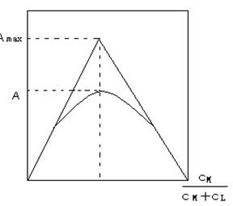
20. 5 分 (3121)
请用 Woodward 规则计算下列化合物的最大吸收波长。
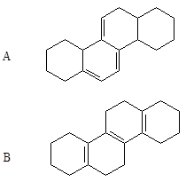
Woodward 规则：
链状共轭二烯母体基本值为 217nm
同环二烯母体基本值为 253nm
异环二烯母体基本值为 214nm
共轭系统每增加一个双键加 30nm
烷基或环残余取代同共轭系统相连加 5nm
21. 10 分 (3122)
用表中的数据计算空白项目中的数值。已知化合物的摩尔质量为 280g/mol。
──┬───┬───┬──────┬─────┬─────┬──────
│吸光度│透射比│摩尔吸收系数│吸收池光程│ 浓度 │吸收系数a
│ A │ T/% │e/L/(cm×mol) │ b/cm │ c/(mol/L) │(浓度为 g/L)
──┼───┼───┼──────┼─────┼─────┼──────
1 │ 0.877│ (1) │ (2) │ 0.500 │ (3) │ 250
──┼───┼───┼──────┼─────┼─────┼──────
2 │ (4) │ 19.6 │ (5) │ 1.00 │6.91×10-5 │ (6)
──┴───┴───┴──────┴─────┴─────┴──────
22. 10 分 (3132)
已知亚异丙基丙酮 (CH3)2C＝CHCOCH3 在各种溶剂中实现 n→p*跃迁的紫外光谱特征如下：
溶剂 环己烷 乙醇 甲醇 水
lmax/nm 335 320 312 300
emax 25 63 63 112
假定这些光谱的移动系全部由与溶剂分子生成氢键所产生，试计算在各种极性溶剂中氢键的强度。(NA= 6.02×1023mol・L-1，h= 6.623×10-34J×s， c = 3×1010cm/s)
23. 5 分 (3133)
试计算化合物（如下式）的最大紫外吸收波长。
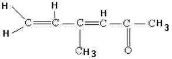
24. 5 分 (3134)
计算化合物（如下式）的紫外光区的最大吸收波长。
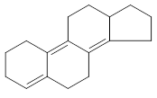
25. 5 分 (3144)
中和25.00mL含有组成未知但经过了纯化的弱酸溶液需要44.60mL标准的0.1050mol/LNaOH。然后将这个量的碱精确地加到50.00mL未知酸中, 加足量的指示剂, 使其浓度为5.00×10-4mol/L. 用1.00cm吸收池测得溶液在485nm处的吸光度为0.378, 在625nm处的吸光度为0.298。试计算: (a)溶液的pH是多少? (b)该弱酸的Ka。(已知: 5.00×10-4mol/L指示剂在强酸和强碱介质中的吸光度在l=485时分别为 0.454和 0.052; l=625时分别为 0.176 和 0.823，指示剂的KHIn=5.4´10-7)
26. 5 分 (3301)
苯胺的lmax＝280nm时, 其摩尔吸收系数e＝1430, 若采用1.0cm吸收池, 要制备透射比为30%的苯胺水溶液100mL需要多少克苯胺? [M(苯胺)为93]
27. 5 分 (3305)
据报道, Pd与4,4'-双( 二甲基氨基 )硫代二苯甲酮的配合反应是测定Pd的最灵敏显色反应之一, 其摩尔吸收系数高达2.12×105L/(moL・cm)。假定最小可测吸光度为0.001, 所用吸收池的光程为10cm, 问用分光光度法测定Pd的最低可能浓度是多少? 如果吸收池的容积为10mL，可以测定的最小质量Pd量是多少? [Ar(Pd)为106.4]
28. 10 分 (3306)
0.500g钢样溶解后, 以Ag+作催化剂, 用过硫酸铵将试样中的Mn氧化成高锰酸根, 然后将试样稀释至250.0mL, 于540nm处, 用1.00cm吸收池测得吸光度为0.393。若高锰酸根在540nm处的摩尔吸收系数为2025, 计算钢样中Mn的质量分数。( Ar(Mn)=54.94 )
29. 10 分 (3307)
0.200g含铜试样溶解后, 在EDTA存在下与二乙基二硫代氨基甲酸盐反应生成有色配合物, 然后稀释至50.0mL, 测得吸光度为0.260。取含铜0.240%的试样0.500g,按上述同样办法处理后, 测得最后溶液的吸光度为0.600, 若吸收池厚度为1.00cm, 请计算样品中的含铜量。
30. 10 分 (3308)
有色物质X的最大吸收在400nm处, 用2cm吸收池, 测得0.200mg/L的溶液的吸光度为0.840, X的化学式量为150, 问
(1) X在400nm处的吸收系数
(2) X在400nm处的摩尔吸收系数
(3) 用1.00cm 吸收池, 测得400nm处 X溶液吸光度为0.250, 哪么25.00mL溶液中含有多少mg的 X?
(4) (3) 中所述的溶液中X质量浓度多少?
31. 5 分 (3310)
某显色配合物,测得其吸光度为A1, 经第一次稀释后, 测得吸光度为A2,再稀释一次测得吸光度为A3。已知A1－A2＝0.500, A2－A3＝0.250，试求透射比比值T3∶T1。
32. 5 分 (3311)
用普通分光光度法测量一浓度为0.0010mol/L的M 的标准溶液, 其吸光度为0.699, 测定该M 的另一未知溶液, 吸光度为1.00, 两种溶液的透射比相差多少? 若以上述标准溶液作参比测定上述未知溶液, 示差法与普通法相比较, 读数标尺扩大了多少倍? 未知溶液的吸光度为多少?
33. 5 分 (3314)
某亚铁螯合物的摩尔吸收系数为12000 L/(moL・cm),若采用1.00cm的吸收池, 欲把透射比读数限制在0.200 至0.650 之间, 分析的浓度范围是多少?
34. 10 分 (3315)
在1.00cm吸收池中, 1.28×10-4mol/L的高锰酸钾溶液在525nm的透射比为0.500。试计
算:
(1)此溶液的吸光度为多少?
(2)若将此溶液的浓度增加一倍, 则同样条件下, 吸光度和透射比各为多少?
(3)在同样条件下, 此种溶液在该吸收池中的透射比为0.750时, 浓度为多少?
35. 10 分 (3318)
将含有色组分X 的500mg试样溶解并稀释至500mL。取此溶液的一部分在1.00cm的吸收池中, 于400nm处测得吸光度为0.900。将10.0mg纯X 溶于1L相同的溶剂中, 按同样的操作在0.100cm的吸收池中测得吸光度是0.300, 试求原试样中X 的质量分数。
36. 5 分 (3319)
有一分光光度计, 其透射比读数误差为0.003, 某试液在一定条件下测得吸光度为0.625, 试计算由于读数误差所引起的浓度测定的相对误差( 不计正负 ) 。
37. 10 分 (3320)
浓度为0.080mg/50mL的Pb2+溶液, 用双硫腙光度法测定。用2.0cm的比色皿, 在波长5nm处测得透射比T=53%, 求吸收系数a和摩尔吸收系数e各为多少( Ar(Pb)=207.2 )
38. 5 分 (3507)
配体ERIOX与Mg2+在pH=10.00条件下，生成1：1的有色配合物。现用光度法以 Mg2+滴定ERIOX溶液。滴定结果表明：在化学计量点处，〔Mg-ERIOX〕＝〔ERIOX〕 ＝5.0×10-7mol/L，计算Mg配合物的生成常数。
39. 5 分 (3508)
钯（Pd）与硫代米蚩酮反应 生成1：4的有色金属配合物，用1.00cm的液池，于520nm 处测得浓度为0.20ug/mL的Pd试样溶液的吸光度为0.390，求钯－硫代米蚩酮配合物的摩尔吸收系数。[Ar(Pd)=106.4]
40. 10 分 (3509)
一个化合物可能有A或B两种结构。在该化合物的光谱中。其 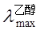
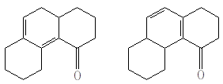
A B
41. 5 分 (3510)
计算下列化合物的。
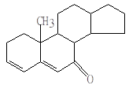
42. 5 分 (3511)
据报道，通过与某配体形成配合物可同时测定钴和镍。在365nm时，某配体与钴和镍形成的配合物的摩尔吸收系数分别为e Co=3.53×103 L/(moL・cm) ，e Ni ＝3.23×103 L/(moL・cm)；而同样条件下，在700nm处，则e Co＝428.9 L/(moL・cm)，e Ni=0。用1.00cm吸收池测量某溶液 ，在波长为 365nm及700nm处测得的吸光度分别为A365＝0.724和A700＝0.0710。计算该溶液中镍和钴的浓度。
43. 10 分 (3512)
一种维生素/无机添加剂的双片试样重6.08g，经湿法灰化消除有机物，最后稀至 1000mL。取两份相同该溶液10.00mL，进行分析，根据下列数据，计算每片试样中 Fe的平均含量（以g/kg表示）。
试液体积
Fe(Ⅲ)1.00mg/mL 配体 H2O 吸光度
0.00 25.00 15.00 0.492
15.00 25.00 0.00 0.571
44. 5 分 (3513)
2-环己烯酮（C6H8O）在lmax＝225nm处的e max=10000 L/(moL・cm)，用1.0cm吸收池， 测得该化合物溶液的吸光度是0.30，计算每升该溶液中需2-环己烯酮多少克？
（Mr(C6H8O)＝96）
45. 10 分 (3514)
用光度法测定反应Zn2+ + 2L2- ZnL22- 的平衡常数。配离子ZnL22-的最大吸收波长lmax为480nm,测量用1.00cm吸收池。配位体L2－的量至少比Zn2+大5 倍，此时吸光度仅决定于Zn2+的浓度。Zn2+和L2－在480nm处无吸收。测得含2.30 ×10－4mol/LZn2＋和8.60 ×10－3mol/L L2－溶液的吸光度为0.690。在同样条件下，含2.30×10－4mol/LZn2＋和5.00×10－4mol/L L2－溶液的吸光度为0.540。计算该反应的平衡常数。
46. 10 分 (3515)
输铁蛋白是血液中的输送铁的蛋白，其相对分子质量为81000，它携带两个Fe（Ⅲ）离子。脱铁草氨酸是铁的有效螯合剂，其相对分子质量为650，它能螯合一个Fe（Ⅲ）。被铁 饱和的输铁蛋白（T）和脱铁草氨酸（D）在波长lmax428nm和470nm处的摩尔吸光系数如下：
e/mol・ L－1・cm－1
l T D
428nm 3540 2730
470nm 4170 2290
铁不存在时，两化合物均无色。用1.00cm吸收池测得含T和D的试液在470nm处的吸光度为0.424，在428nm处吸光度为0.401。计算被铁饱和的输铁蛋白（T）和脱铁草氨酸（D）中铁各占多少分数。
47. 10 分 (3516)
一种酸性指示剂HIn，其Ka＝1.42×10－5，该指示剂在HCl溶液中以完全不解离的 HIn形式存在，而在NaOH溶液中则完全解离为In－形式。在两种介质中，观察到在430nm和570nm处吸光度和浓度成线性关系。该指示剂在两种波长下的摩尔吸收系数如下：
e430 e570
HIn（HCl溶液） 6.30×102 7.12×103
In－（NaOH溶液） 2.06×104 9.60×102
当用1.00cm吸收池时，在无任何缓冲溶液的条件下，2.00×10－5mol/L该指示剂在两 种波长下的吸光度各是多少？
48. 10 分 (3517)
用紫外-可见分光光度计进行光度分析时，若在整个透射比范围内仪器产生的绝对标准偏差为+0.003T(T是透射比）．分别计算当分析溶液的吸光度为1.000和2.000时，由这种不确定性所引起的相对标准偏差是多少？
49. 10 分 (3518)
用一种配体可与Pd（Ⅱ）和Au（Ⅱ）两种离子形成配合物，从而同时测定试样中的钯 和金。已知钯配合物的最大吸收在480nm,而金配合物的最大吸收在635nm。二者的摩尔吸收系数如下：
摩尔吸收系数εL/(moL・cm)
480nm 635nm
钯配合物 3.55×103 3.64×102
金配合物 2.96 ×103 1.45×104
取25.0mL试样，用过量配体处理并最终冲稀至50.0mL。用1.00cm吸收池，测得该冲 稀液在480nm的吸光度为0.533，在635nm处吸光度为0.590。计算试样中Pd（Ⅱ）和Au(Ⅱ）的浓度。
50. 5 分 (3519)
取2.00mL尿样，用试剂处理使其中的磷酸盐显色，并将处理液最后冲稀至100mL，取 该溶液25.0mL，测得吸光度为0.428，另取25.0mL相同的溶液，并加入1.00mL含 0.0500mg的磷酸盐标准溶液，测其吸光度为0.517。计算尿样中磷酸盐的含量（以mg/mL 表示）。
51. 5 分 (3520)
Co或Ni与2，3－双硫苯骈哌嗪配合物的摩尔吸收系数及吸收峰波长数据如下：
波长 510nm 656nm
eCo L/(moL・cm) 36400 1240
eNi L/(moL・cm) 5520 17500
某0.376g土壤试样，经溶解后，再稀释到 50.0mL，自其中取25.00mL部分出来处理， 以除去杂质干扰，加2，3－双硫苯骈哌嗪，再将体积调至50mL，将此溶液装入1.00cm 吸收池测出在510nm及656nm处的吸光度分别为0.467和0.347。计算土壤试样中Co 和Ni的质量分数。（Mr(Co)＝58.93，Mr(Ni)＝58.70）
52. 5 分 (3521)
含有硫脲与三价铋配合物的某溶液，在波长为470nm处的摩尔吸收系数 9.3×103 L・cm－1・mol－1，则(a)浓度为5.0×10－5mol/L的此配合物在 0.500cm吸收池中所测得的吸光度为多少？(b)如a所述溶液，其透射比又为多少？(c)若吸光度保持在0.100至1.500之间。并使用1.00cm吸收池，则将可测定铋的浓度在什么范围？
53. 10 分 (3522)
今取5.00mL尿样于100mL容量瓶中，稀至刻度，混匀，吸取此稀释液25.0mL用分光 光度计测出其吸光度为0.428。现将1.0mL含0.050mg/mL P的标准溶液加入另一份 25.0mL稀释液中，测出其吸光度为0.517。问：（1）加入P后的吸光度究竟为多少？（2）试样液中P的浓度为多少？（3）尿样中P的浓度是多少？
54. 5 分 (3523)
结晶紫萃取光度法萃取Au，100mL试液含Au 100mg，取其20mL试液用5mLCHCl3 萃取，萃取率E=100%，用1cm吸收池，lmax=600nm下测得T=50%，试计算A、 a、e（Au的相对原子质量为197.0）。
55. 10 分 (3526)
测定钢中的铬和锰，称取钢样0.500g，溶解后移入100mL容量瓶中，用水稀释至刻度， 混匀。用移液管吸取 25.0mL于150mL烧杯中，加氧化剂加热将锰氧化成MnO4－，铬氧化成Cr2O72－，放冷，移入100mL容量瓶中加水至刻度。另外配制标准KMnO4和K2Cr2O7溶液各一份，将上面三份溶液用1.0cm吸收池在波长440nm和545nm处测定吸光度，所得结果如下：
溶液 浓度(mol/L) A440nm A545nm
KMnO4 3.77×10－4 0.035 0.886
K2Cr2O7 8.33×10－4 0.305 0.009
试液 0.385 0.653
试计算钢中铬、锰的质量分数。
56. 5 分 (3527)
NO2－离子在355nm处e 355＝23.3 L/(moL・cm)，e 355/e 302=2.50，NO3－离子在355nm处吸收可以忽略，在波长302nm处e 302＝7.24 L/(moL・cm)。今有一含NO2－和NO3－离子的试液，用1.00cm 吸收池测得A302=1.010、A355=0.730。计算试液中NO2－和NO3－的浓度。
57. 5 分 (3528)
α－莎草酮的结构为下述A、B两种结构之一，已知α－莎草酮在酒精溶液中的lmax为252nm，试利用Woodword规则判别它是属于哪种结构？
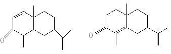
(A) (B)
58. 5 分 (3529)
试推导弱酸HL分别在酸性、碱性及缓冲溶液中所测得的吸光度来计算弱酸解离常数的 公式：
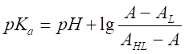
式中AL弱酸在碱性溶液中的中吸光度。 AHL弱酸在酸性溶液中的吸光度； A弱酸在缓冲溶液中的吸光度（若吸收池厚度为1.00cm）。
59. 5 分 (3530)
弱酸HA的共轭碱的最大吸收波长在520nm，通过测定浓度相同但pH值不同的弱酸 的吸光度所得数据如下：
pH 吸光度 pH 吸光度
2.0 0.00 8.0 0.565
4.0 0.00 9.0 0.590
5.0 0.030 10.0 0.590
6.0 0.180 11.0 0.590
7.0 0.475 12.0 0.590
问该弱酸的pKa值近似是多少？
60. 5 分 (3531)
还原态的NADH是一种具有高荧光的重要的辅酶素。它在340nm有最大吸收，在465nm 有最大发射。由标准NADH溶液得到下列荧光强度数据：
浓度 相对荧光强度 浓度 相对荧光强度
NADH，c/10－6mol/L NADH c/10－6mol/L
0.100 13.6 0.500 59.7
0.200 24.6 0.600 71.2
0.300 37.9 0.700 83.5
0.400 49.0 0.800 95.1
请作出校准曲线，并用以估计某未知溶液中NADH的浓度，此溶液的荧光相对强度 为42.3。
61. 2 分 (3532)
一种分子的水溶液，在一定波长下的摩尔吸收系数是12.39L・mol－1・cm－1，现透 过10cm厚溶液测得透射比是75%，求该溶液的浓度。
62. 5 分 (3533)
分析工业用水中Fe的含量。量取30.0mL水样两份于50mL容 量瓶中，将Fe氧化为 Fe3＋之后，一份加入50.0mg/mL的标准Fe3＋溶液5.00mL，然后各加入适量HNO3酸化，再加入过量的KSCN溶液，使Fe3＋生成红色FeSCN2＋配合物，加水稀至刻度，用1.0cm吸收池在波长455nm处进行测定，加标准溶液的一份其吸光度为0.610，未加标准溶液的一份吸光度为0.400。假定溶液遵守比尔定律，计算水中Fe3＋的质量浓度(mg/L)。
63. 5 分 (3534)
0.745mg的下列化合物溶于100.0mL乙醇中，在1cm的比色池中测定，紫外强吸收带的最大吸收波长为243nm，其吸光度为0.520。求这个最大吸收波长所对应的摩尔吸收系 数。
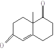
64. 5 分 (3535)
计算下列化合物UV光谱的lmax值。
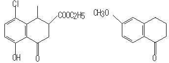
(A) (B)
提示：用于计算芳香族羰基衍生物的Scott经验定律：
型的lmax（nm)
X＝烷基 246
X＝氢 250
X＝羟基、烷氧基 230
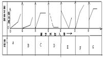
取代基Z 增量
邻位 间位 对位
R－（烷基） 3 3 10
－OH，－OR 7 7 25
－O－ 11 20 78
－Cl 0 0 10
－Br 2 2 15
－NH2 13 13 58
65. 10 分 (3664)
Co(Ⅱ)与配位体R的配合物的最大吸收波长为550nm，当溶液中Co（Ⅱ）离子浓度维 持在2.5×10－5mol/L而R浓度不同得一系列吸光度数值 如下：
c（R）/10－5mol/L A550 c(R)/10－5mol/L A550
1.50 0.106 7.75 0.500
3.25 0.232 9.50 0.521
4.75 0.339 11.5 0.529
6.25 0.441 16.5 0.529
求（1）形成配合物的配位体与Co离子的配位比。
（2）计算配合物的稳定常数K。
66. 5 分 (4518)
从本质上阐述红外吸收光谱法比紫外吸收光谱法更有利于有机化合物的定性分析的原因.
四、问答题 ( 共 41题 )
1. 10 分 (2320)
在紫外-可见分光光度法中, 试析偏离朗伯-比尔定律的主要原因.
2. 10 分 (2320)
在紫外-可见分光光度法中, 试析偏离朗伯-比尔定律的主要原因.
3. 5 分 (4004)
吸光光度分析中选择测定波长的原则是什么？若某一种有色物质的吸收光谱如下
图所示, 你认为选择哪一种波长进行测定比较合适？说明理由。
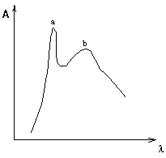
4. 10 分 (4006)
含钛钢样 1.000g，其中含钛的质量分数约为5.5%，经溶解处理后将所得溶液定量转入250mL容量瓶中，用 1mol/L H2SO4稀释至刻度。移取整份溶液置于 100mL 容量瓶中，在 1mol/L H2SO4酸度下用 H2O2发色。生成的配合物 [Ti(H2O2)]2+在410nm 处有强吸收。[Ar（Ti）47.88]问
(1) 当用比色计测量时应选用红、黄、绿、蓝四种滤色片中的哪一种来进行测量？
为什么？
(2) 用合适的滤光片时测得该络合物的摩尔吸收系数为 800。问用 1cm 比色皿测
量时应移取 5.00mL、10.00mL 还是 25.00mL 溶液进行发色？为什么？
(3) 为了消除 Fe2(SO4)3的颜色干扰，有人建议采用以下三种方法：
(a) 加抗坏血酸或盐酸羟胺使 Fe(III) 还原成 Fe(II)
(b) 加适量 NaF 掩蔽 Fe(III)
(c) 用不加 H2O2 的溶液作参比
你愿意选用哪种方法？为什么？
5. 10 分 (4011)
试将下列六种异构体按紫外吸收峰波长递增次序排列，并简要说明理由。
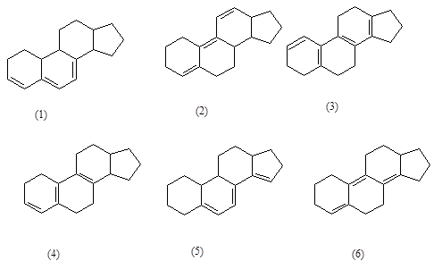
6. 10 分 (4012)
试述如何利用紫外吸收光谱区分以下四种化合物。
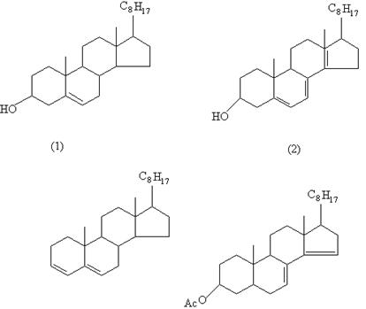
7. 5 分 (4015)
某干涉滤光片由一层 0.520μm 厚，折射率为 1.400 的介质所构成。问在紫外─可见光区该滤光片所通过的波长为多少纳米？
8. 5 分 (4028)
设滴定反应为 A + B → C, B为滴定剂,对下列各情况画出表示光度滴定过程的曲线。
(1) A 和 B 不吸光，C 吸光
(2) B 和 C 不吸光，A 吸光
(3) A 和 C 不吸光，B 吸光
9. 5 分 (4029)
按以下数据分别指出异构体的结构：
a-异构体在 228nm 处显示峰值[e=14,000L/(cm×mol)]，
而b-异构体在 296nm 处有一吸收带 [e= 11,000L/(cm×mol)]（如图）。
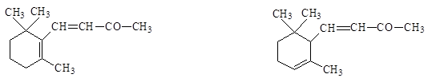
(Ⅰ) (Ⅱ)
10. 5 分 (4030)
试举出两种方法，鉴别某化合物的 UV 吸收带是由 n→p*跃迁产生还是由p→p*跃迁产生。
11. 5 分 (4040)
分子荧光与分子磷光有什么主要区别？
12. 5 分 (4054)
磷光光度计与荧光光度计结构的主要区别是什么？为什么？
13. 5 分 (4058)
绘制比色分析的工作曲线时得到如下数据：
c/(mol/L) I0 I
0.00 98.0 98.0
1.00 97.0 77.2
3.00 99.5 50.0
5.00 100.0 33.5
7.00 99.0 23.4
9.00 100.0 18.1
计算相应的吸光度。
(2) 问该体系是否遵循比尔定律？
14. 5 分 (4063)
用光度滴定法，在酸性条件下以 KMnO4标准溶液滴定一草酸试液，即以此草酸试液为参比溶液，在测定的波长下，Mn2+ 的稀溶液无吸收，请绘出此滴定的滴定曲线形状和它的化学计量点。
15. 5 分 (4064)
请看图填写各部件的名称和它的主要功用：
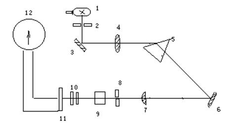
72型分光光度计光学系统图
部件 名称 主要功用
1
5
9
11
16. 5 分 (4065)
用双波长分光光度法测定苯酚和三氯苯酚混合液中苯酚的含量，请选择测量波长（以l1表示）和参比波长（以l2表示）把它们直接画在图上。
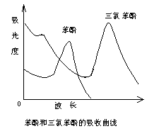
17. 5 分 (4066)
设 10-4 mol/L a 液和 10-4 mol/L b 液的吸收曲线如图所示，请画出推测得到的 10-4 mol/L a 液与 10-4 mol/L b液按 1:1 体积混合的混合液的吸收曲线于图中。
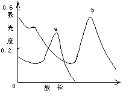
18. 5 分 (4067)
根据滴定曲线(如图)，推断该光度滴定的类型，以 et、 ex、 ep（分别代表滴定剂、被滴定物和反应产物的摩尔吸收系数）是否等于零以及相互关系（大于、等于或小于）来表征 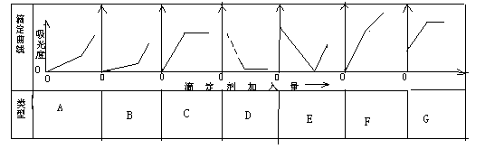
19. 5 分 (4123)
请画出紫外分光光度法仪器的组成图（即方框图），并说明各组成部分的作用？
20. 5 分 (4138)
许多有机化合物的最大吸收波长常出现在 200～400 nm，对这一光谱区间应选用的光源为下面三种中的哪一种？其他两种又何时选用?
(1) 氘灯 (2) 能斯特灯 (3) 钨灯
21. 5 分 (4150)
乙酰乙酸乙酯有酮式和烯醇式互变异构体，某实验室的一瓶乙酰乙酸乙酯用紫外光谱测得仅末端有一弱吸收，试问可能是哪种构型。
22. 5 分 (4305)
共轭二烯在己烷溶剂中lmax＝219nm。如果溶剂改用己醇时, lmax比219nm大还是小? 并解释。
23. 5 分 (4306)
化合物A 和 B 的结构如下: 在同一跃迁类型中, 一个化合物lmax＝303nm, 另一个化合物lmax＝263nm, 指出观测到的吸收反应是哪种类型的跃迁? 哪一个化合物具有lmax＝303nm？
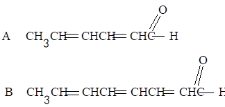
24. 5 分 (4307)
在环戊烯( C5Ｈ8)分子中, 可能发生哪种类型的跃迁?
25. 5 分 (4309)
紫外-可见吸收光谱相互干扰的A、B两组分, 其最大吸收波长分别为lA和lB, 若用双波长法测定A组分的含量, 试简述选择测定波长l1和l2的方法。
26. 5 分 (4310)
紫外及可见分光光度计的单色器置于吸收池的前面, 而原子吸收分光光度计的单色器置于吸收池的后面。为什么两者的单色器的位置不同?
27. 5 分 (4312)
在波长508nm, 以邻二氮菲分光光度法测定铁, 若有721型和751型分光光度计各一台,选用哪一台进行测定较宜? 为什么?
28. 5 分 (4314)
为什么原子荧光法能对低浓度成分进行测定?
29. 5 分 (4316)
今有两种溶液: 苯的环己烷溶液和苯酚的环己烷溶液。已知苯和苯酚在紫外光区均有吸收峰。若测得溶液1 的吸收峰为213nm和271nm, 溶液2 的吸收峰为204nm和254nm, 试判断溶液1和溶液2 分别是上述哪种溶液, 并说明其道理?
30. 5 分 (4379)
简述分子荧光光谱常与其吸收光谱呈镜像对称关系, 而又不完全对称, 且荧光光谱的波长较长的理由。
31. 10 分 (4380)
应用朗伯-比尔定律的前提之一是要求入射光是单色的。除了波长为l的辐射外, 还有波长为l'的辐射时。讨论由此两种波长组成的辐射的测量结果对朗伯-比尔定律的偏离情况 (假定单独应用每种波长时均遵守朗伯-比尔定律)。
32. 5 分 (4381)
具有n→p*和p→p*两种跃迁的化合物的光谱图如下, 给出每种类型跃迁所引起的谱带的大致lmax,并解释。
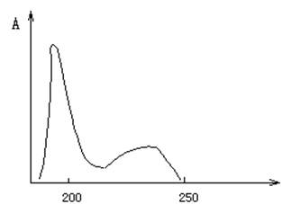
33. 5 分 (4438)
请将下列化合物的紫外吸收波长lmax值按由长波到短波排列, 并解释原因。
(1) CH2=CHCH2CH=CHNH2 (2) CH3CH=CHCH=CHNH2
(3) CH3CH2CH2CH2CH2NH2
34. 5 分 (4439)
指出下列化合物的紫外吸收波长, 按由长波到短波吸收波长排列.
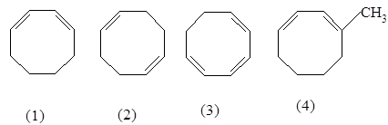
35. 2 分 (4440)
指出下列化合物的紫外吸收波长(按由长波到短波吸收波长排列), 并解释原因。
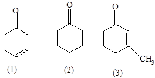
36. 5 分 (4441)
下面为香芹酮在乙醇中的紫外吸收光谱, 请指出二个吸收峰属于什么类型, 并根
据经验规则计算一下是否符合?
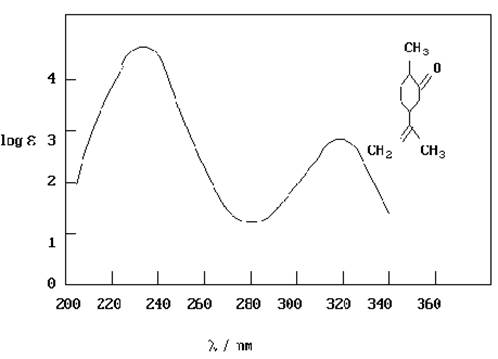
37. 10 分 (4608)
浓度为3.0×10－4mol/L的KMnO4和K2Cr2O7溶液, 分别在0.5mol/L的H2SO4和 0.5mol/L的H3PO4介质中, 用1.00cm吸收池绘制光吸收曲线如图所示,
根据吸收曲线的形状回答下列问题:(实线表示KmnO4，虚线表示K2Cr2O7 )
(1) 求出KMnO4溶液在l490, l560时的吸光度。
(2) 计算KMnO4在lmax为520nm,550nm处的ε。
(3) 当改变KMnO4的浓度时, 吸收曲线有何变化?为什么?
(4) 若在KMnO4和K2Cr2O7的混合溶液中测定KMnO4的浓度, 应选择的工作波长是多 少?
(5) 若在KMnO4和K2Cr2O7的混合溶液中测定K2Cr2O7的浓度, 可采用什么方法?
38. 5 分 (4610)
为了提高光度分析法的准确度, 如何得以测量常量组分?简单介绍并说明原因。
39. 5 分 (4611)
为了提高光度分析法的准确度, 如何得以测量常量组分?简单介绍并说明原因。
40. 5 分 (4612)
什么是分子荧光发射光谱与荧光激发光谱?何者与吸收光谱相似?
41. 5 分 (4613)
A和B化合物的结构如下. 试比较两者产生荧光的能力, 并说明其原因。
A B